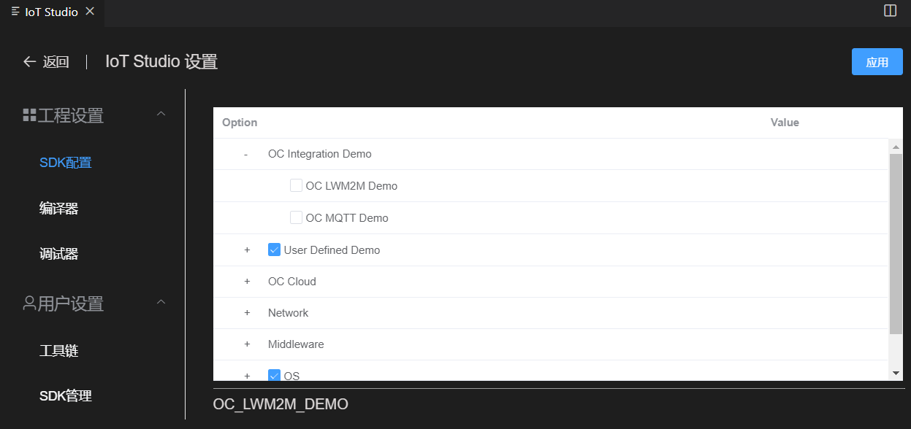

配置管理
SDK配置
打开‘IoT Studio设置’--‘工程设置’--‘SDK配置’ 
- 可以开启/关闭SDK的相关功能，或者选择模块类型。
- 修改后点击‘应用’按钮，会在工程根目录生成.config文件和autoconf.h文件。您可以在Makefile或者源码中引用这些配置。
- SDK配置底层实际是Linux的Kconfig，依赖当前工程根目录的Kconfig文件。
SDK管理
打开‘IoT Studio设置’--‘用户设置’--‘SDK管理’

- SDK管理功能会检测服务器上的最新版本SDK
- 当有版本更新时请点击‘更新’按钮下载安装